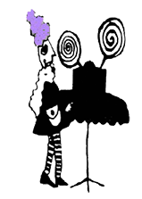

The Film Studies Program at the University of South Carolina, the Nickelodeon Theatre of Columbia, South Carolina, and New York University's Department of Cinema Studies are pleased to announce the Helen Hill Award. To honor the legacy of filmmaker, film educator, animator, and Columbia, SC native Helen Hill, the award will support innovative independent filmmakers. This year the award will help fund its recipient to attend the 6th Orphan Film Symposium, March 26–29, 2008, in New York City. There the recipient will screen her or his work for an eclectic audience of other filmmakers, scholars, moving image archivists, curators, collectors, students, and others working in media beyond the mainstream.
This award honors work that affirms Helen Hill's artistic legacy, lived values, and everyday passions. In a film culture dominated by corporate interests and the values of consumerism, the Helen Hill Award supports radically independent, innovative filmmaking of exceptional talent. The award will go to a filmmaker whose work celebrates and embodies such things as creativity, selfexpression, animation, small-gauge film, homemade movies and all things made by hand, collaboration, generosity, liberal spirituality, activism, love, play, community, and connection.

Contributions to fund this award are best as checks payable to: THE NICKELODEON THEATRE
Mail checks to:
Susan Courtney, Director
Film Studies Program
University of South Carolina
Columbia, SC 29208
Questions to Dan.Streible@nyu.edu.
|